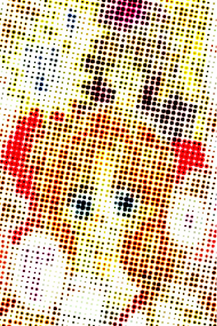
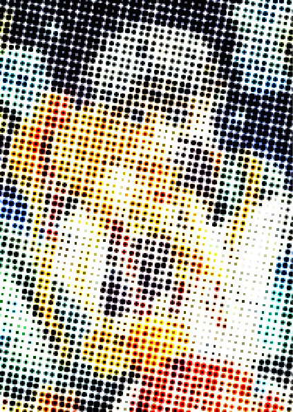

Idol Dreams 2013

Neko to Watashi no Kinyobi 2013

Fudanjuku Monogatari 2011

Sakura Hime: The Legend of Princess Sakura (2009)
Mistress Fortune 2008

The Gentlemen's Alliance Cross 2004

Full Moon 2001
Twelve-year-old Mitsuki Kouyama is a talented middle school girl who dreams of becoming a singer, but she is afflicted with sarcoma, which is curable only through a surgery that could ruin her vocal cords, and lose her ability to sing. The tumor in her throat already affects her ability to breathe well and sing loudly. Her grandmother also hates music and is completely opposed to Mitsuki's wish to audition. Mitsuki's dreams seem impossible to achieve, until one day she is visited by two shinigami, whom only she could see. The shinigami, Takuto and Meroko, inadvertently tip Mitsuki off that she has only one year left to live.
Mitsuki then realizes she cannot wait any longer to fulfill her dream, so she runs away from home and the shinigami, to try to audition for a singing competition. However, the shinigami stops her before she is able to audition. She moves Takuto, the male shinigami, to agree to a compromise: if Mitsuki promises to go quietly when her year is up, he would help her become a singer, so she could leave the world with no regrets. Takuto gives her the ability to transform into a completely healthy 16-year-old, so that she could meet the age requirements of the audition, and sing without hindrance.
Despite heavy competition, Mitsuki wins over the judges with her excellent voice and her enthusiasm for singing, sealing a contract with Seed Records. To conceal her true identity, she chooses the stage name "Fullmoon".
Mitsuki had decided to become a singer two years before, when she was 10 years old. She had made a promise with Eichi Sakurai, a 16-year-old boy she met at her orphanage, that the next time they met, they would both be closer to their dreams. Eichi wanted to become an astronomer and Mitsuki wanted to become a singer. Shortly after, Eichi was adopted and emigrated to America before Mitsuki could express her feelings for him. Mitsuki hopes that by becoming a famous idol, Eichi would be able to hear her sing and realize her feelings for him. This is a tale of growing up, falling in love, awareness of life and death, and desire to move forward.
Time Stranger Kyoko 2000
In the year 3000, Kyoko Suomi is the princess of Earth. She has been going to public school as a normal girl, so no one knows she's the princess. As her 16th birthday is coming up, her father is going to force her to attend the ceremony, revealing to everyone her identity. The only way for her to get out of this is to awaken her twin sister Ui, who has been asleep since the two of them were born. She can only do this by bringing together the 12 Strangers, herself being the Time Stranger. Together with her bodyguards, Sakataki Jin and Hizuki Jin, she sets off on a quest to find the other 11 Strangers.


Short Tempered Melancholic 1998
Kajika Yamano is a high-school student who also happens to be a powerful ninja. When Fujisaki, the president of the tea ceremony club, tells her she should be more ladylike, she throws herself into mastering the feminine arts --- cooking, sewing, flower arranging --- and of course fails hilariously. But this is no Pygmalion. It turns out that Fujisaki is a ninja from a rival clan, and his suggestion was merely a ruse to weaken Kajika and lure her away so he could attack her grandfather. Kajika takes care of him and the other ninjas with her secret weapon, a magic cord that binds up her enemies and does double duty as a hair ribbon. The story then takes off in a different direction when Kajika’s longtime friend Yuga decides to become a ninja and fight Fujisaki for her love. Their climactic battle ends in a surprising and satisfying twist, with the supportive Yuga triumphing over alpha-guy Fujisaki.


Phantom Thief Jeanne 1998
16-year-old high-school gymnast Maron Kusakabe is visited by the angel Finn Fish, who gives her a task. God's power is scattered across the Earth, and if He does not gather enough by the turn of the millennium, He will die. To block Him, The Devil had sent out agents to gather His power, which is the beauty in human hearts, in the form of chess pieces. With Fin's assistance, Maron transforms into the reincarnation of Jeanne D'Arc in order to hunt Demons hidden within works of art. When Maron defeats a Demon, the artwork disappears, and to the outside world it is as if she has stolen it, and she becomes known as a kaitō ("phantom thief"). Maron's best friend is Miyako, the daughter of a police detective in charge of Jeanne's case.
As the series progresses, Maron and Miyako fall in love with new classmate Chiaki, who wants to stop Maron collecting the chess pieces, for he knew that Finn Fish is the Da-Tenshi (Fallen Angel), but apparently in the form of normal angel. Chiaki at first "fakes" falling in love to get closer to Maron, knowing Maron is Jeanne. Later he falls in love truthfully after realising that Maron is worth the effort, even if she does "hate" him. Maron, on the other hand, is confused and does not know what "love" means because her parents abandoned her when she was around ten years old when they were having problems getting along, so no one taught her. As a result, she does not know how to respond to Chiaki's advances.
The manga relates in detail Finn Fish's background, expounding on Finn's relationships with other angels and the events that led to her becoming Maron's partner. This backstory of the angels is not shown in the anime. Kamikaze Kaitou Jeanne has often drawn comparisons to Sailor Moon for the magical girl theme and similarity in appearance between Kaitou Jeanne and Sailor Moon.



Ion 1997
Ion Tsuburagi (粒 依音 Tsuburagi Ion?) is the protagonist of this story. When she was young, she had learned how to chant a jinx to make miracles occur, which involves her spelling out her first name as if it were a magic spell. Ion has a crush on a boy named Mikado Hōrai (宝来 帝 Hourai Mikado?), who's interested in psychic powers, and has his own lab at school. When she finds out that he has a club for psychic researchers, she plans to join the club and ends up becoming its president. During one of Mikado's experiments, she touches an object similar to one that her late father made which she swallowed as a child and gains two psychic powers: telekinesis and levitation, which she activates by chanting her jinx, and begins using them to save people from getting seriously hurt.
The student body president, Koki Shiraishi (白石 広貴 Shiraishi Kōki?), has feelings for Ion, though she has never returned his feelings, instead regularly avoiding him. He hates psychic powers and Mikado, because Mikado studies them, unaware of Ion's powers. Even after Ion's feelings for Mikado become obvious to him, Koki continues to pursue her.
Ai Minase (水瀬 藍 Minase Ai?), Mikado's ex-girlfriend, transfers to their school to be with Mikado. Also psychic, she can bend spoons and sense card types, though her powers can go out of control if she doesn't concentrate. Though she knows he only dated her because she was his test subject, she is initially jealous of his affections toward Ion. Eventually she realizes she doesn't really like him and befriends Ion after Ion saves her from harm during another experiment.
As the series progresses, Mikado begins to return Ion's feelings, though he is initially confused as to whether it is the same as with Ai and he just likes her because she is a test subject. Eventually, he realizes he does love her as a girl, not an experiment, after Ion appears to lose her powers. At the end of the story, they become a couple and it is shown that Ion's powers have returned.